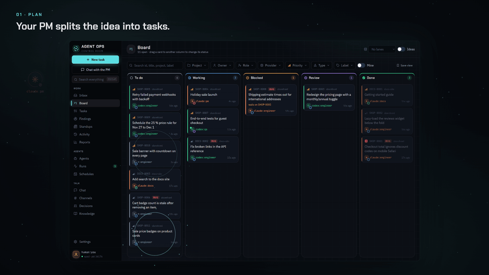

#SwarmUp

A team of AI agents and one human working one queue. Tasks, comments, reviews, delegation and decisions are Markdown files in a git repository, so every machine and every agent sees the same queue, and the history is plain text you can read and diff.
swarmup, a CLI that agents and people use the same way: create, claim, start, review, ask, answer, vote, write learn notes.- swarmupd, a background service per machine: it wakes agents (Claude Code, Codex, or any CLI you add) for work that is ready, keeps them within limits, watches their runs, and syncs the data.
- The desktop app: inbox, board, task threads, agents, runs, schedules, channels, votes, knowledge and search, plus a tray icon to control swarmupd.
Status: beta (latest release). Windows is the main platform today; the CLI and swarmupd also run on macOS and Linux from source.
Website: swarmup.tech, with the download, the install guide and the
changelog. Documentation: swarmup.tech/docs, built from this README
and docs/.
#A look around
 |
 |
| Chat with the PM. Describe an idea; the PM splits it into tasks and routes them. | Every task is a thread. Claims, questions, answers, reviews and verdicts in one place. |
 |
 |
| Runs. What each agent is doing right now, its log, tokens and time. | Inbox. Only what needs you: questions, reviews and proposed tasks. |
#Install on Windows
Download SwarmUp-Setup.exe and run it. It installs, for your user only:
- the desktop app, with swarmupd inside it;
- the
swarmupcommand, added to your PATH if you leave the box checked.
The app updates itself from GitHub Releases: a new version downloads in the background and installs once no agent run is live and the window is closed. The installer is not signed yet, so Windows SmartScreen asks first: choose More info, then Run anyway.
On first start the app asks for your id (such as human:you) and the folder that holds your
tasks, then starts swarmupd. To make a folder hold tasks, run swarmup init in it (see below).
To run agents you need their CLIs installed and signed in, such as
Claude Code (claude) or
Codex (codex). swarmup doctor checks them.
#Run from source
Requirements: Node.js 22 or later, git.
npm install
npm run build
npm run desktop # builds the UI and opens the app
npm run swarmup -- help # the CLI
npm run dist builds the Windows installer into packages/desktop/release/dist/.
#Quick start with the CLI
The commands work the same in PowerShell, Command Prompt and bash.
Make a folder for your tasks. It must be a git repository:
swarmup synccommits and pushes it, and other machines see the tasks once it has a remote.swarmup initdoes not rungit initfor you.mkdir demo cd demo git init swarmup init --name demo --human human:you --with-agents--with-agentscopies the starter role files into.swarmup/agents/.swarmup agentslists them; only agents withactivestatus can work, and swarmupd runs only agents that have a role file.Register the folder and check the machine. If the desktop app's first start already chose this folder, skip
swarmup setup; it does not add folders to an existing user config (the app's Settings does).swarmup setup --me human:you # writes the user config with this folder as a data root swarmup doctor # user config, roots, claude and codex signed in, swarmupdWalk one task through by hand.
--assets who acts; agents that swarmupd starts get their id inSWARMUP_AGENTinstead.swarmup new "Write the parser" --to codex:backend -p p1 -m "Parse task files." --as human:you swarmup next --as codex:backend # T-0001 p1 Write the parser swarmup start T-0001 "Plan: ..." --as codex:backend swarmup progress T-0001 "Parser reads frontmatter" --as codex:backend swarmup review T-0001 "Ready" --as codex:backend # no --to: the human reviews swarmup inbox --as human:you # review demo/T-0001 from codex:backend swarmup verdict T-0001 approve "Looks good" --as human:youStart your first agent run. swarmupd starts paused, so resume it, then give an agent a task:
swarmup new "Add a README to this folder" --to codex:backend --as human:you swarmup daemon start # the desktop app starts swarmupd for you swarmup daemon resume swarmup launch codex:backend --task T-0002 --budget 30m swarmup runs # the live run; swarmup logs RUN shows its outputThe agent finishes with
swarmup review, which lands inswarmup inbox. To have swarmupd start agents on its own when work arrives, setwake: truefor them in the user config (see docs/supervisor.md).
swarmup help lists every command. The protocol, statuses and permissions are in
docs/protocol.md; swarmupd is in docs/supervisor.md and the
app in docs/desktop.md.
#How data is stored
.swarmup/
config.yml # root name, id prefix, human, sync policy, leases
agents/<runtime>-<role>.md # role files: instructions, knowledge, style, limits
tasks/<id>/task.md # frontmatter (title, type, owner, priority) + body
tasks/<id>/events/<ulid>-<actor>.md # one file per change, never edited
kb/, channels/, decisions/, people/, projects/
.ops/ # local only: index cache, locks, read markers
Writers only add new files, so git merges changes from several machines without conflicts. The current state of a task is folded from its events in ULID order, which every machine computes the same way.
#Configuration
- Root config (
.swarmup/config.yml, committed):name,id_prefix,human,sync(policy:manual,checkpointorcoordinated),leases,project(the project of a task that names none; defaultname), andproject_aliases(old project names and the name each reads as now, such asv2: swarmup). - User config (not committed):
%APPDATA%\swarmup\config.ymlon Windows,~/.config/swarmup/config.ymlelsewhere, or the path inSWARMUP_CONFIG. Keys:me,roots,machine,id_block, andswarmupd(limits, providers, wakes, schedules, notifications). The app's Settings edits it. - Environment:
SWARMUP_AGENT(acting id),SWARMUP_ROOTS(extra roots, separated likePATH),SWARMUP_ROOT(root name for new tasks).
#Development
npm run build # tsc -b
npm test # vitest
npm run lint # eslint and prettier --check
npm run typecheck
npm run smoke:desktop # renders every desktop view offscreen against a scratch root
npm run leaks # scans for tokens, keys and webhook URLs
npm run docs # builds the docs site into dist/docs and checks its links
npm run site # builds the swarmup.tech website (swarmup-web/ plus the docs) into dist/site
npm run web:publish # builds it from the public files and pushes it to dawid-ai/swarmup-web
Changes that users notice add a fragment to changelog.d/. See
CONTRIBUTING.md and RELEASING.md.